1.1. Ethernet standards for physical layer, ethernet limits, Ethernet frame
Ethernet standards for the physical layer define the specific hardware and electrical characteristics required to transmit data over a network. These standards, often referred to by names like 10BASE-T, 1000BASE-SX, or 10GBASE-T, specify critical details including the type of cable (such as twisted-pair or fiber optic), the maximum cable length, the data rate, and the signaling method. For instance, the "BASE" indicates baseband transmission, while the preceding number denotes the speed in megabits or gigabits per second, and the suffix specifies the cable medium. These specifications ensure that devices from different manufacturers can interoperate seamlessly, providing a common foundation for building local area networks.
Standard
Speed
Medium
Max Distance
Topology
10BASE-T
10 Mbps
Twisted-pair copper cables (Cat 3 or higher)
100 meters
Star topology
100BASE-TX
100 Mbps
Twisted-pair copper cables (Cat 5 or higher)
100 meters
Star topology
1000BASE-T
1 Gbps
Twisted-pair copper cables (Cat 5e or higher)
100 meters
Star topology
10GBASE-T
10 Gbps
Twisted-pair copper cables (Cat 6a or higher)
100 meters
Star topology
100BASE-FX
100 Mbps
Fiber optic cables (multimode)
412 meters
Point-to-point
1000BASE-SX
1 Gbps
Fiber optic cables (multimode)
550 meters
Point-to-point
10GBASE-SR
10 Gbps
Fiber optic cables (multimode)
300 meters
Point-to-point
10GBASE-LR
10 Gbps
Fiber optic cables (single-mode)
10 kilometers
Point-to-point
Ethernet is robust and ubiquitous, but it has inherent limitations in terms of distance, speed, topology, and application.
Category
Limit
Physical & Distance
Copper cable max 100 meters
Physical & Distance
Signal degradation over distance
Network Design
Max 4 repeaters/hubs between devices
Network Design
Broadcast domain inefficiency
Performance
Shared medium bandwidth
Performance
Switch capacity bottlenecks
Performance
Protocol overhead (min 20-byte header)
Inherent & Application
No native Quality of Service (QoS)
Inherent & Application
Not deterministic (variable latency/jitter)
An Ethernet frame is a standardized data packet used to send information over a wired or wireless local network (LAN). It's the fundamental unit of network traffic, acting like an envelope for your data.
Field
Size
Purpose
Preamble & SFD
8 bytes
Synchronize the receiving device's clock with the incoming data stream.
Destination MAC
6 bytes
The hardware address of the intended recipient.
Source MAC
6 bytes
The hardware address of the sender.
Type
2 bytes
Identifies the protocol inside (e.g., IPv4, IPv6).
Data (Payload)
46-1500 bytes
The actual information being carried.
FCS (CRC)
4 bytes
Error-checking code to detect corruption.
1.2. MAC address, broadcasting
A MAC address is a unique identifier assigned to a network interface controller (NIC) for use as a network address in communications within a network segment.
A broadcast is a multipoint connection in a computer network. In this case, a data packet is transmitted from one point to all participants in a message network. This is done using the broadcast address.
1.3. The difference between hub, switch and router
Hubs enable many devices to plug into a network through a single shared port on a router. The disadvantage of hubs is that when a hub receives a packet, it sends copies of the packet to every other device connected to it. This can cause problems with traffic congestion and data security.
A switch enables multiple devices to share a network while preventing each device's traffic from interfering with other devices' traffic. The switch acts as a traffic cop at a busy intersection. When a data packet arrives at one of its ports, the switch determines which direction the packet is headed. It then forwards the packet through the correct port for its destination.
Routers guide and direct network data, using packets that contain various kinds of data—such as files, communications, and simple transmissions like web interactions.
1.4. CSMA/CD, collision, half and full duplex
CSMA/CD stands for Carrier Sense Multiple Access/Collision Detection, with collision detection being an extension of the CSMA protocol. This creates a procedure that regulates how communication must take place in a network with a shared transmission medium. The extension also regulates how to proceed if collisions occur i.e. when two or more nodes try to send data packets via the transmission medium (bus) simultaneously and they interfere with one other.
A collision in networking occurs when two devices send data at the same time on a shared medium, causing the signals to interfere with each other. This leads to the data becoming corrupted and unusable, requiring the devices to retransmit the data.
Half-duplex communication is a method where data can flow in both directions between two devices, but not simultaneously. It operates like a walkie-talkie or a single-lane bridge; one device must completely finish transmitting before the other can begin. Because the channel is shared for both sending and receiving, this mode requires a protocol like CSMA/CD to manage turn-taking and to handle the inevitable collisions that occur when two devices try to talk at the same time. This inherent need to wait and the potential for data collisions make half-duplex less efficient and slower than its counterpart, and it was primarily used in older network environments built around hubs.
Full-duplex communication allows for simultaneous two-way data transmission, enabling a device to send and receive data at the exact same time. This is analogous to a telephone conversation where both parties can speak and listen without having to pause for the other. This is achieved by using separate, dedicated channels for sending and receiving, which completely eliminates the possibility of collisions. By removing the overhead of collision detection and allowing for uninterrupted bidirectional flow, full-duplex offers a significant performance increase and is the standard for all modern wired Ethernet connections, such as when a computer is connected to a switch.
1.5. ARP request, detecting doubled IP address
An ARP request (Address Resolution Protocol request) is a broadcast message sent by a device on a local network when it needs to discover the MAC address (Media Access Control address) associated with a specific IP address. The ARP request message contains the sender's IP and MAC address, along with the target IP address (the IP of the device it wants to communicate with). The target's MAC address is initially set to FF:FF:FF:FF:FF:FF, which is a broadcast MAC address
To detect a duplicate IP address on a network, one common method is to monitor ARP requests. When two devices have the same IP address, ARP will detect the conflict because each device will respond with its MAC address when queried for that IP.
1.6. BOOTP, DHCP
Bootstrap protocol (BOOTP) allows a diskless client machine to discover its own IP address, the address
of a server host, and the name of a file to be loaded into memory and
executed.
DHCP is the more modern and widely used protocol that builds upon BOOTP but offers greater flexibility and features. It allows devices on a network to automatically receive their IP address, subnet mask, default gateway, DNS servers, and other configuration information dynamically, without the need for manual configuration. The technology eliminates the need for individually configuring network devices manually, and consists of two network components, a centrally installed network DHCP server and client instances of the protocol stack on each computer or device. When connected to the network, and periodically thereafter, a client requests a set of parameters from the server using DHCP.
1.7. VLANs
A virtual local area network or VLAN is a logical grouping of devices connected to a single Ethernet segment. It helps networks by reducing the number of broadcast domains per network device and network subnet. This allows multiple networks to share the same physical infrastructure without interfering. To improve network performance, administrators break the LAN network into smaller LANs. When you break a large LAN into smaller LANs, you create VLANs. VLANs create a boundary for broadcast messages. A broadcast message generated in a VLAN reaches all devices inside the VLAN. It does not go outside the VLAN. If two devices belong to different VLANs, they do not exchange broadcast messages.
Practical part
2.1. Find your MAC address using ipconfig, MAC address of your default gateway using Wireshark
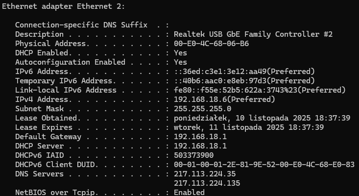
2.2. Find the producer of your network adapter
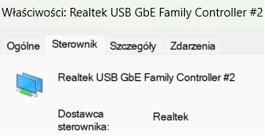
2.3. Flush ARP cache
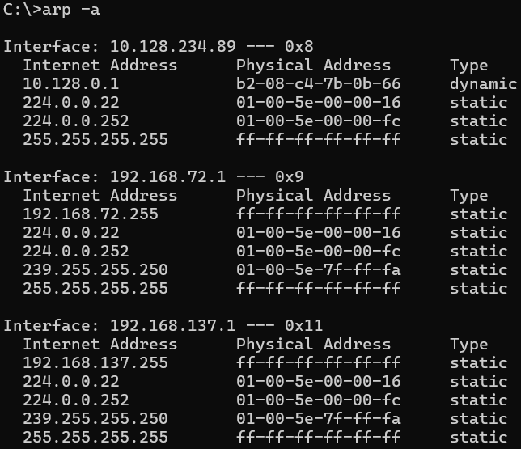
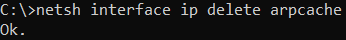
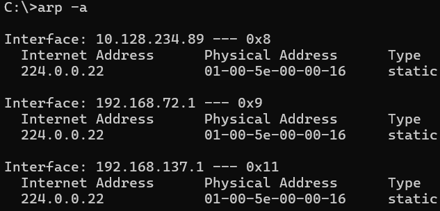
2.4. Set the same IP address on two different hosts in the lab and detect it using arp request
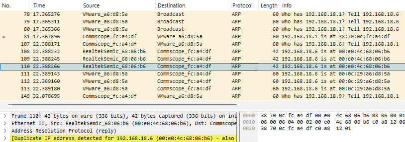
2.5. Using Wireshark save the packets required to obtain IP address through DHCP
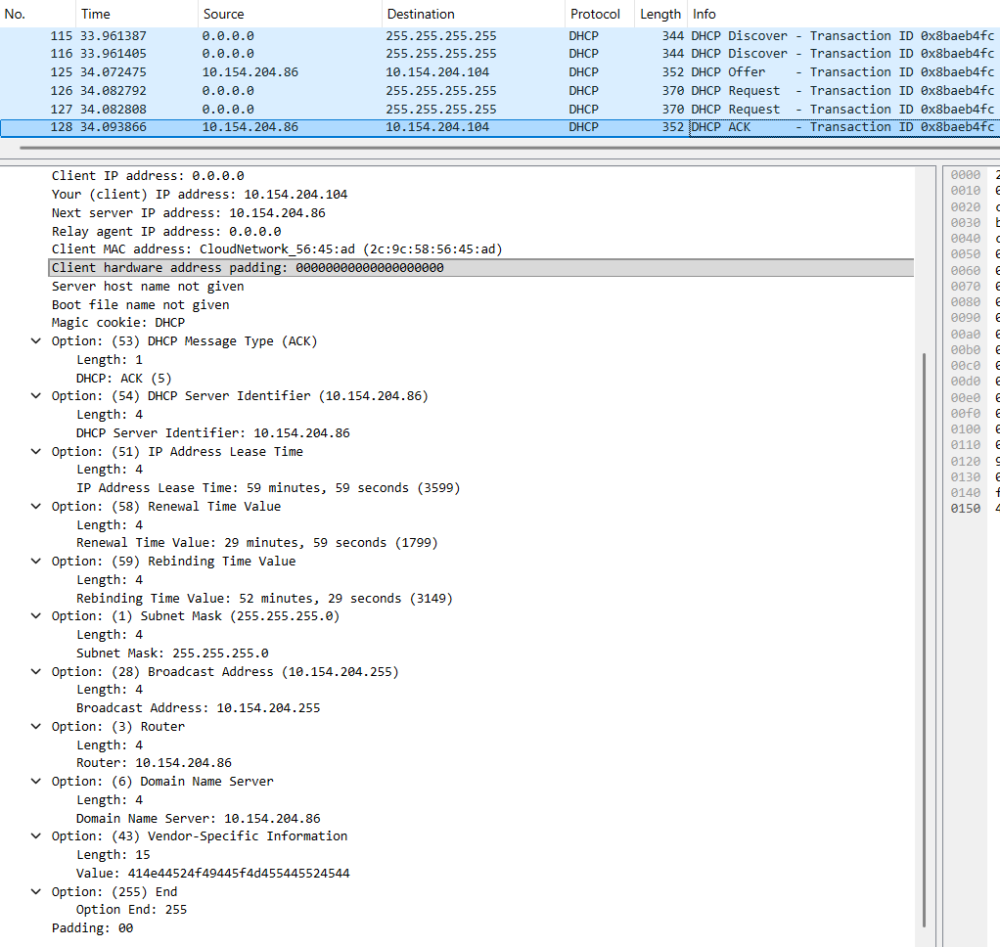
2.6. Release and renew IP address using ipconfig
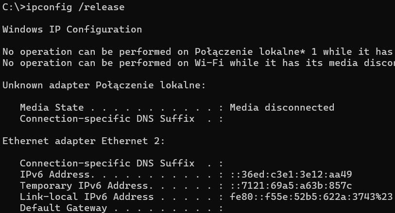
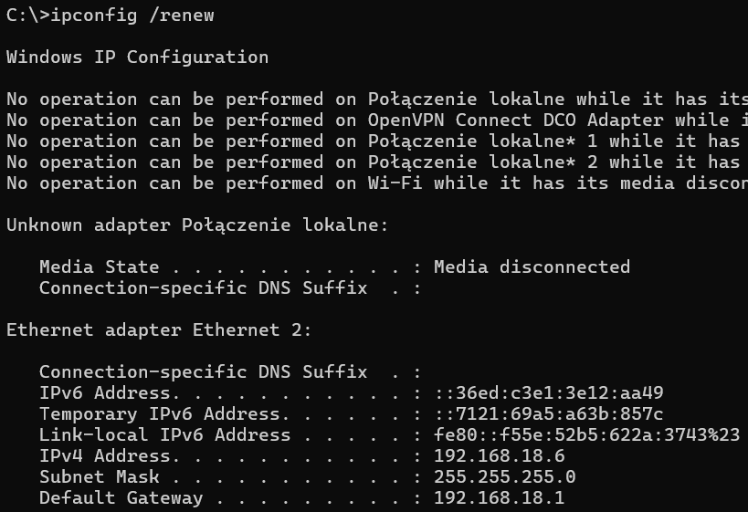
2.7. Change MAC address of a computer in the lab to the same as the MAC address of the other computer in the lab and verify IP address obtained.
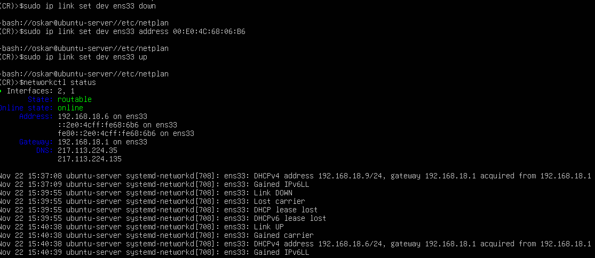
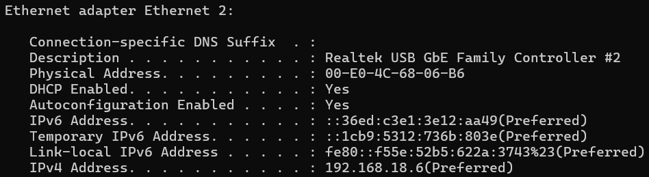
Practical part Pokryshchuk
2.1. Find your MAC address using ipconfig, MAC address of your default gateway using Wireshark
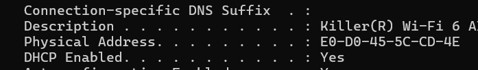
2.2. Find the producer of your network adapter
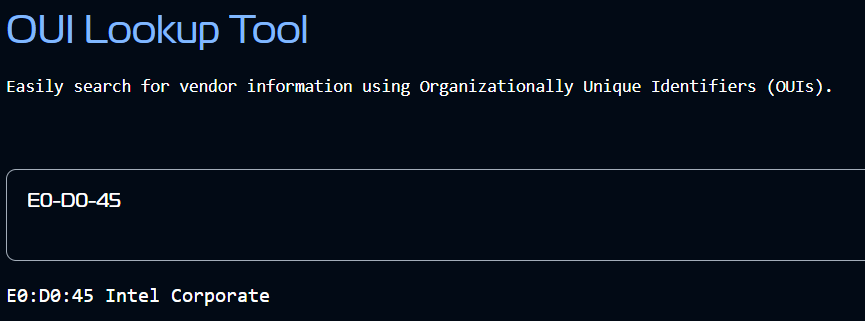
2.3. Flush ARP cache
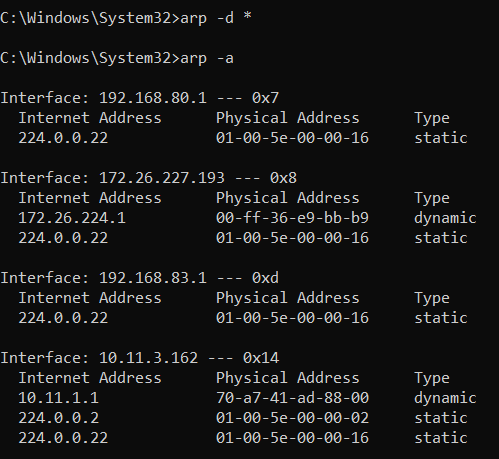
2.4. Set the same IP address on two different hosts in the lab and detect it using arp request
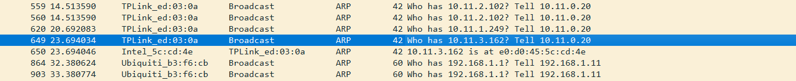
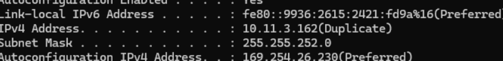
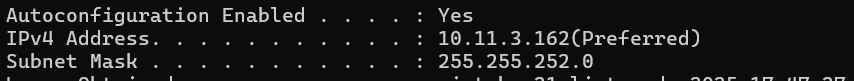
2.5. Using Wireshark save the packets required to obtain IP address through DHCP